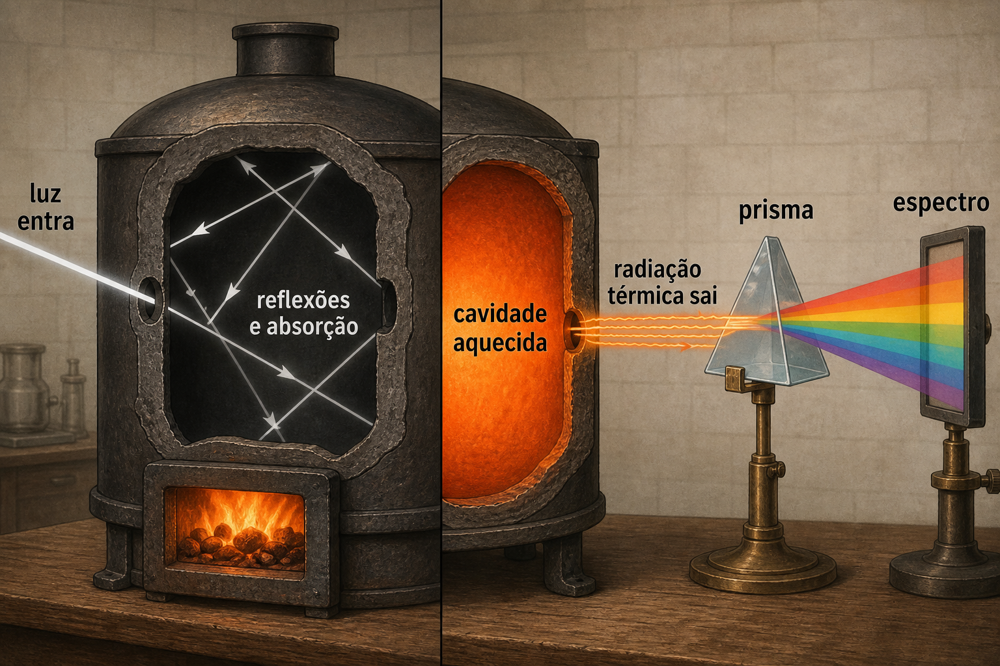
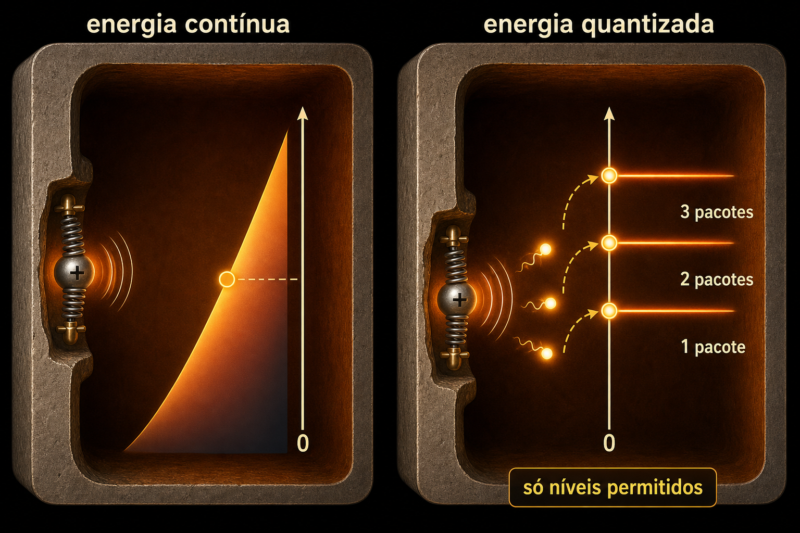
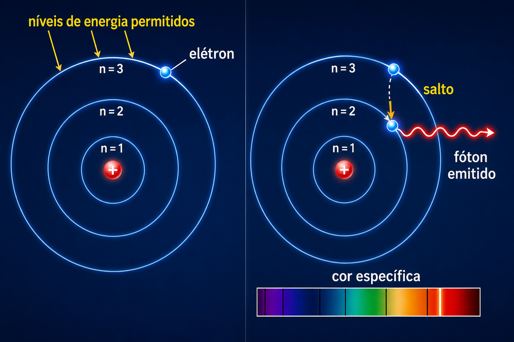

Aula 02 — Da Física Clássica à Quântica: Corpo Negro, Efeito Fotoelétrico e Bohr
Fundamentos de Computação Quântica — Curso de Extensão
Aula 02 — Da Física Clássica à Quântica: Corpo Negro, Efeito Fotoelétrico e Bohr
Módulo 2 — Radiação do corpo negro e quantização
A cavidade negra
Um corpo negro ideal absorve toda a radiação incidente. Na prática, usa-se uma cavidade aquecida com um pequeno orifício. A radiação interna sofre muitas absorções e emissões, e uma pequena parte escapa pelo furo.

Passando a radiação por um prisma ou uma rede de difração e medindo sua intensidade, obtemos um espectro contínuo. Todas as faixas são emitidas simultaneamente; a temperatura muda a intensidade relativa e a posição do pico.
Temperatura pelo espectro
A lei de Wien relaciona o pico do espectro à temperatura:
\[\lambda_{\max}T=b.\]
O espectro do Sol se aproxima do de um corpo negro a aproximadamente \(5.800\,\text{K}\).

A crise clássica
A teoria clássica previa energia ilimitada em frequências altas, a chamada catástrofe do ultravioleta. Planck resolveu o problema propondo que os osciladores das paredes trocavam energia em quantidades discretas:
\[E_n=nhf,\qquad n=0,1,2,\ldots\]

Relação com a computação quântica
Um qubit físico também possui estados de energia controláveis e transições quantizadas. Em qubits supercondutores, por exemplo, pulsos de micro-ondas manipulam transições entre dois níveis escolhidos para representar \(|0\rangle\) e \(|1\rangle\). A constante de Planck e a relação entre energia e frequência estão no centro desse controle.
Atividade
No simulador, aumente a temperatura e registre como variam intensidade, cor aparente e posição do pico. Explique por que não sai apenas uma cor pelo furo.
Efeito
Módulo 3 — Efeito fotoelétrico e fótons
Experimento
Luz incide sobre uma superfície metálica. Quando a frequência é suficiente, elétrons são ejetados e podem ser coletados por um circuito. Hallwachs usou uma placa de zinco e luz ultravioleta; outros metais, como sódio e césio, respondem a frequências menores.

Os resultados fundamentais são:
- existe uma frequência mínima para cada material;
- abaixo dela, aumentar a intensidade não ejeta elétrons;
- acima dela, maior frequência produz elétrons com maior energia cinética;
- maior intensidade significa principalmente mais elétrons emitidos.
Einstein explicou o fenômeno atribuindo à luz pacotes de energia:
\[E_{\text{fóton}}=hf,\]
\[K_{\max}=hf-\Phi,\]
onde \(\Phi\) é a energia mínima necessária para liberar o elétron.
Relação com a computação quântica
O experimento mostra que interações quânticas individuais produzem eventos discretos. Computadores quânticos também terminam em medições discretas: cada execução devolve bits clássicos, embora o estado anterior seja descrito por amplitudes. Detectores de fótons e interfaces luz-matéria também são componentes importantes da computação e comunicação quânticas fotônicas.
Cuidado conceitual
Um elétron não sai necessariamente numa única direção fixa. A direção depende do material, da luz e das colisões internas; o aparelho coleta uma distribuição de elétrons.
Bohr
Módulo 4 — Bohr e níveis de energia
Bohr propôs, em 1913, que o elétron só poderia ocupar determinados níveis de energia. Uma transição entre níveis envolve emissão ou absorção de um fóton:
\[hf=|E_f-E_i|.\]

Isso explicou por que átomos emitem linhas espectrais específicas, em vez de todas as cores possíveis.
Limite do modelo
A imagem de órbitas circulares é uma etapa histórica, não a descrição moderna. Na mecânica quântica, elétrons são descritos por estados e orbitais, não por trajetórias planetárias definidas.
Relação com a computação quântica
Um qubit escolhe dois estados distinguíveis de um sistema quântico e os chama de \(|0\rangle\) e \(|1\rangle\). Pulsos com frequência ressonante à diferença de energia permitem controlar transições. O desafio prático é preservar esses estados contra ruído e evitar transições indesejadas para outros níveis.
Pergunta de verificação
Por que um átomo produz linhas de cores específicas em vez de um arco-íris contínuo?